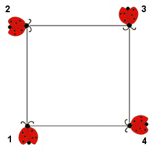

Puzzle 21: Käferproblem

Vier Käfer sitzen in den Ecken eines Quadrates und laufen mit gleicher Geschwindigkeit gleichzeitig los.
Der Käfer 1 läuft auf Käfer 2 zu, Käfer 2 auf Käfer 3, Käfer 3 auf Käfer 4 und der wiederum auf Käfer 1 zu, und
zwar jeweils auf dem kürzesten Weg.
Welches ist die Kurve, auf der sich die Käfer bewegen, wo treffen sie sich und wie lang ist ihr Weg bis zum Treffpunkt?
©1997 - 2026 www.mathematik.ch |🔍